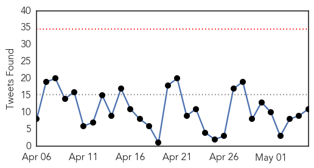
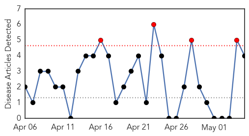
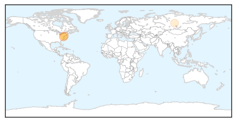
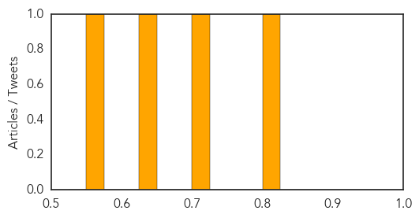

Ebola
30-Day Web Trend
0 alerts, 0 warnings

30-Day Twitter Trend
0 alerts, 0 warnings

Article Locations

Article Confidences

Top Articles:
- 1.000
- Communicating in a crisis like Ebola: Facts and figures
- 0.999
- Managing rumours and misinformation in West Africa
- 0.999
- WATCH: Inside the Troubled Early Days of Guinea’s Ebola Response
- 0.999
- Tracing the Ebola Outbreak, Scientists Hunt a Silent Epidemic
- 0.999
- The fight against Ebola is more hopeful than ever, but it's not over: MSF Canada's Stephen Cornish on the ground in West Africa
- 0.998
- Report: Five months after infection, man spreads Ebola via sex
- 0.998
- Ending Ebola before rainy season imperative
- 0.998
- Ebola can be transmitted through sex for months after recovery
- 0.998
- Report: 5 months after infection, man spreads Ebola via sex
- 0.998
- Ebola outbreak was a warning for the world, says Frontline
- 0.998
- Ebola made vulnerable Liberians to fall back into poverty
- 0.997
- Ending Ebola before rainy season imperative - UNMEER
- 0.997
- As Ebola approaches zero, immunisation gets a boost in West Africa
- 0.996
- Liberia poised to be declared Ebola-free
- 0.996
- Orlando Bloom: Ebola still a real threat
- 0.995
- Ebola end in sight as weekly infections drop to single figures
- 0.994
- Scholarship Named to Honor Ebola Victim Thomas Eric Duncan
- 0.986
- Nigeria not prepared for another Ebola outbreak
- 0.986
- CDC Downgrades Travel Guidance To Liberia Over Ebola Outbreak
- 0.986
- Sahel Annual Report 2014 (MAA61004) - Mali
- 0.985
- A paradigm shift in outbreak response
- 0.985
- Ebola end in sight as weekly infections drop to single figures
- 0.985
- Westporter Leads UN Program to End Ebola Crisis
- 0.984
- Y's Men hear about coping with the Ebola crisis
- 0.983
- Monrovia Medical Unit decommissioned
- 0.978
- President Clinton and Chelsea Clinton in Monrovia, Liberia Monday, May 4, 2015
- 0.970
- Texas Health Resources Announces Medical Scholarship Fund in Liberia
- 0.966
- Christian Council: Pastors must not frustrate work of doctors
- 0.948
- Bioterrorism, public health, superbug, biolabs, epidemics, biosurveillance, outbreaks, DNA sequencing
- 0.942
- Christian Council expresses worry about Pastors interference with Doctors
- 0.938
- Texas Health, Ebola victim's family launch fund to train health workers in Liberia
- 0.937
- Dr. Tim Evans: Accountability Crucial to World Bank Support
- 0.930
- Bill Clinton Celebrates Liberia’s Return to ‘Normal Life’
- 0.914
- US ex-president Clinton praises Liberia progress on Ebola
- 0.874
- New German strategy as Ebola cases fall
- 0.823
- Kenya : Nurse: I signed will before flying to Ebola-hit Liberia
- 0.820
- Track mechanism to check authenticity of medicines: Nadda
- 0.765
- Tracing crisis' roots and how it spread
- 0.718
- Ebola survivors hail Social Aid Volunteers « Awoko Newspaper
- 0.703
- Clinton Pledges Support to Health Sector Recovery, Post Ebola
- 0.696
- Security Council hears Liberia briefing as country anticipates being declared ‘Ebola-free’
- 0.645
- Political violence in Sierra Leone – Amnesty holds Koroma government accountable
- 0.627
- Nepal’s health system at breaking point – doctors
- 0.604
- Sierra Leone: Ebola regulations and other laws must not be used to curtail freedom of expression and assembly
- 0.572
- UNICEF Makes Post-Ebola Donation
- 0.564
- Water and sanitation in health centres in Mali – podcast transcript
- 0.558
- Sierra Leone and donors set out $8m social safety net plan
- 0.538
- Confirmation Plea: Liberia Senate Urged to Confirm Werner, Dahn
Top Tweets:
- 0.803
- The political economy of Ebola Virus Disease (EVD) in West African countries http://t.co/X4VBwumPpe
- 0.720
- Tracing the Ebola Outbreak Scientists Hunt a Silent Epidemic via http://t.co/DQzNdHKSU5 infectious disease
- 0.666
- Monthly Overview on the Ebola Outbreak in West Africa for April 2015 http://t.co/PirIIu0RHo
- 0.662
- Ending Ebola before rainy season imperative - UNMEER - GhanaWeb http://t.co/ffLy7SlMNq ebola EVD
- 0.652
- RT: Ebola in Liberia travel notice has been downgraded; we’re monitoring the situation will update info & advice for traveler…
- 0.612
- Inside the troubled early days of the Ebola response - PRI http://t.co/fTosFjPjTT ebola EVD
- 0.606
- CDC’s Sierra Leone Ebola response team reminds health workers that clean care is safer care. safeHANDS http://t.co/qpLAQztF09
- 0.577
- Read latest public health development: Possible sexual transmission of Ebola http://t.co/Xjg2VhPfLL
- 0.568
- Rep. Kevin Brady tours Woodlands Ebola treatment facility - Your Houston News http://t.co/gq1RFoO2tl ebola EVD
- 0.547
- WATCH: Inside the Troubled Early Days of Guinea's Ebola Response - FRONTLINE http://t.co/UkT4sFGOml ebola EVD
- 0.543
- Ebola crisis revealed "major fault lines" - CMAJ http://t.co/nJaikn5k9F ebola EVD
Pertussis
30-Day Web Trend
4 alerts, 0 warnings

30-Day Twitter Trend
0 alerts, 0 warnings

Article Locations
Article Confidences
Top Articles:
Top Tweets:
-
No tweets found for May 05, 2015